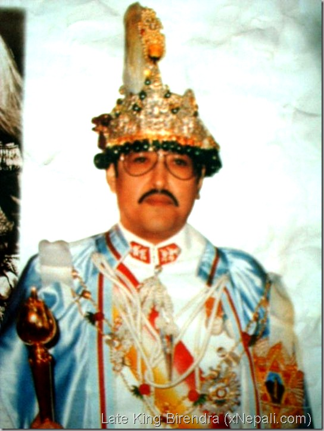

Late Shree Panch Birendra Bir Bikram Shah Dev
1945-2001
one of the favourite king of nepal
King Birendra (Bir Bikram Shah Dev) of Nepal was born on December 28, 1945, the eldest son of King Mahendra and Queen Indra. He had two brothers and three sisters, as well as numerous aunts, uncles, and cousins in the royal family entourage in and around the palace in Nepal's capital city. Birendra married Aishwarya R.L. Rana on February 23, 1970; they had three children— Crown Prince Dipindra, Prince Nirajan, and Princess Shruti.
Biographies
- He was born on December 28, 1945, in Kathmandu, Nepal.
- He was the son of King Mahendra and Queen Ratna.
- He was educated in Nepal and abroad, and received a bachelor's degree in political science from Tribhuvan University in Kathmandu.
- King Birendra was widely mourned in Nepal and around the world, and his death was a major loss for the country.